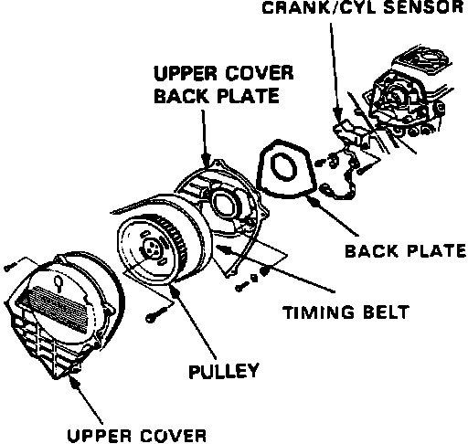
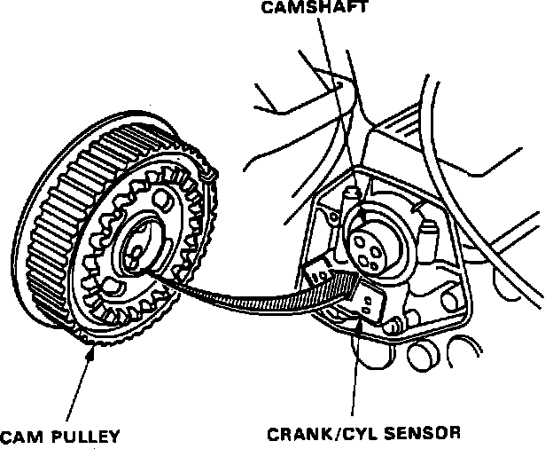

Crankshaft Position Sensor: Service and Repair
CRANK/CYL Sensor Removal:

REMOVAL
1. Remove cruise control actuator.
2. Remove upper front timing belt cover.
3. Remove timing belt. Refer to ENGINE MECHANICAL for additional information.
4. Remove 3 pulley attaching bolts and remove pulley.
5. Remove 4 back plate bolts and remove back plate.
6. Remove 2 CRANK/CYL sensor retaining bolts and remove CRANK/CYL sensor.
CRANK/CYL Sensor Installation:

INSTALLATION
1. Install CRANK/CYL sensor on cylinder head.
2. Install back plate.
3. Align camshaft pulley with pin hole on camshaft.
Torque to 23 ft.lb (32 Nm)
4. Reinstall timing belt.
5. Reinstall upper timing belt cover.
6. Reinstall cruise control actuator.